Scan and understand
Index folders, detect faces, read text, extract AI metadata, and generate local tags or descriptions when you need them.
A local-first Windows workspace for understanding, editing, searching, and cleaning up large media libraries. Find images by people, text, tags, prompts, metadata, dates, and AI details, then edit and organize everything without leaving the app.
Built-in Image Editor
MediaLens now includes a layered editor for day-to-day image work: crop, resize, paint, erase, select, fill, add text, adjust color, apply filters, and save without handing the file off to another app.
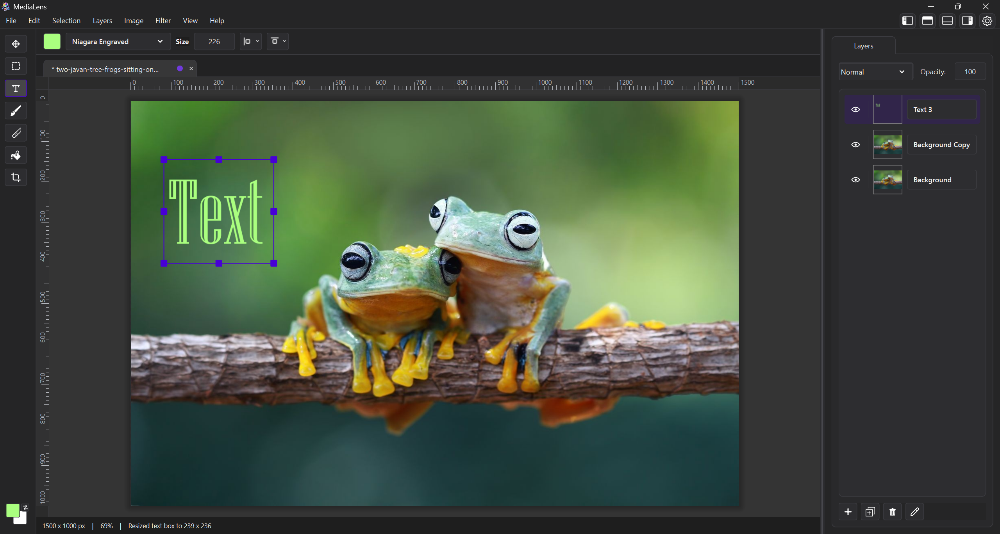
Editor tools
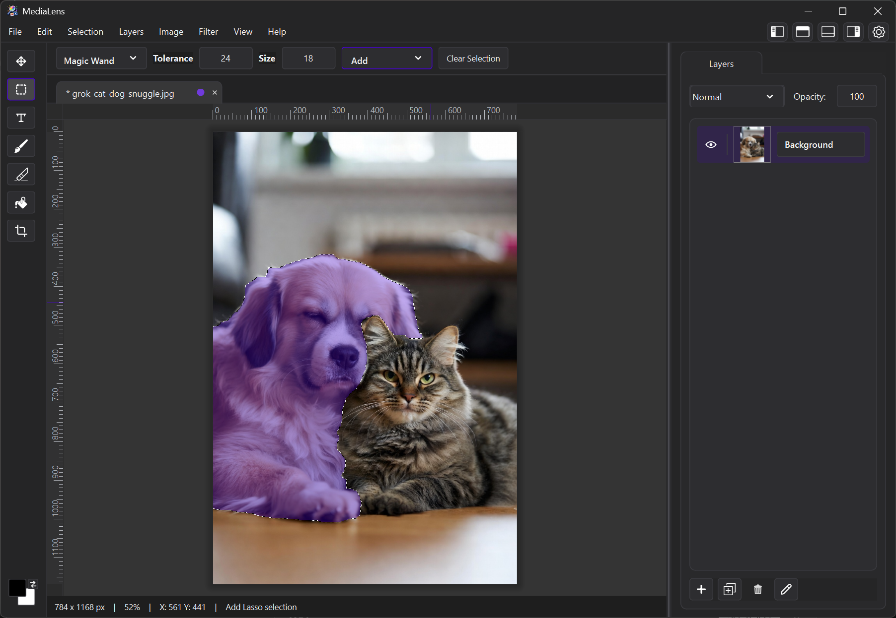
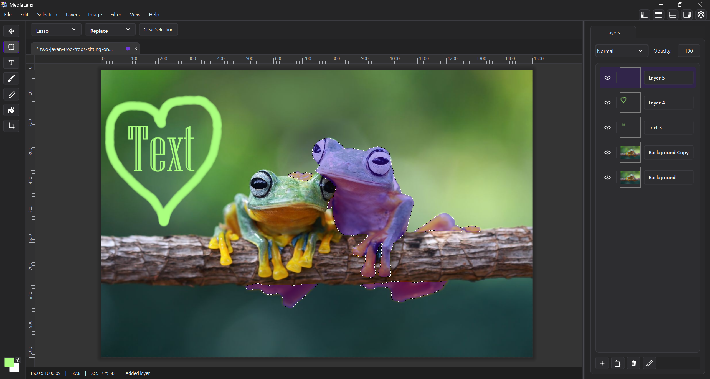
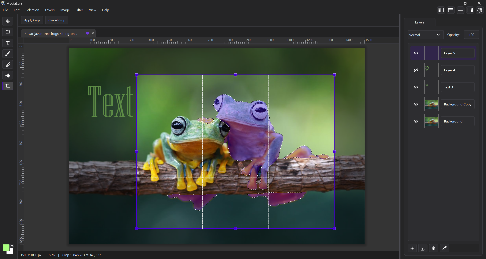
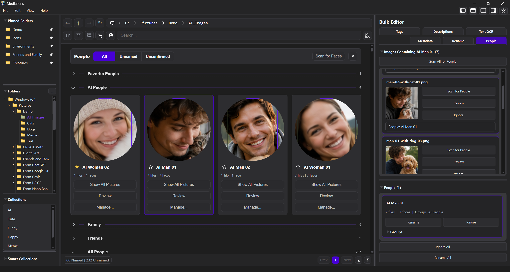
People and facial recognition
Facial recognition runs locally and turns scattered folders into People workflows. Review faces, confirm names, manage groups, mark favorites, hide unwanted people, choose profile images, and jump into every photo where a person appears.
Duplicate and similarity cleanup
MediaLens groups exact duplicates and close variants, then explains the differences so cleanup decisions stay reviewable. Recent releases improve color-shift detection and make best-version recommendations more careful when files should be kept together.
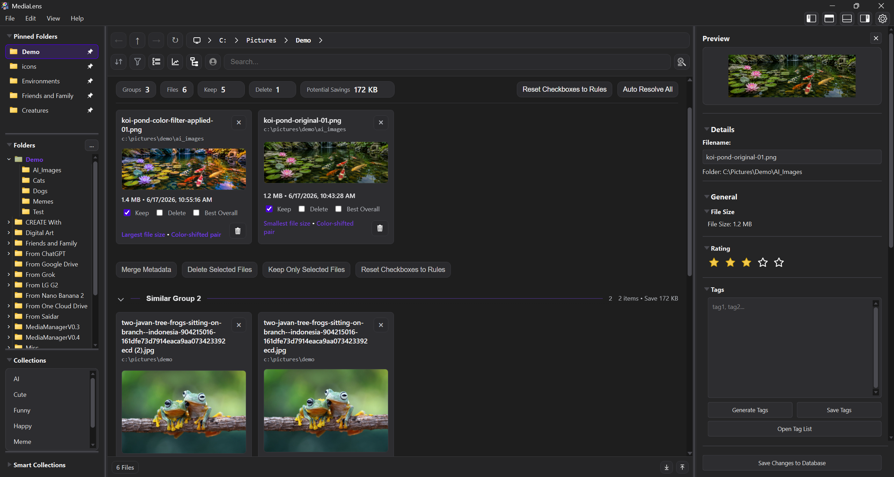
Daily workflow
Index folders, detect faces, read text, extract AI metadata, and generate local tags or descriptions when you need them.
Use guided search or advanced syntax to find people, objects, prompts, ratings, collections, dates, and text inside images.
Open the Image Editor, compare close variants, inspect details, and keep review context close to the current file.
Apply tags, descriptions, OCR text, metadata, People changes, and batch renames across large selections.
Bulk tools and local AI
Bulk editors handle the repetitive work: tags, descriptions, OCR, metadata, People, collections, ratings, and renames. Optional local AI helps generate searchable data while keeping files on your machine.
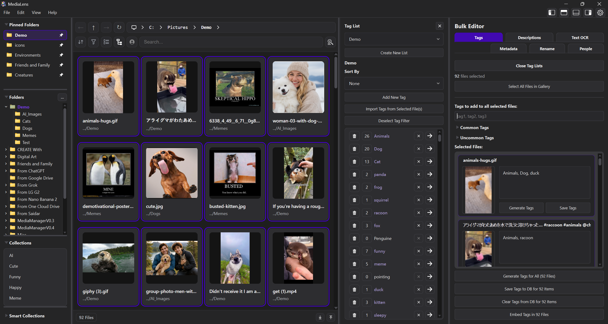
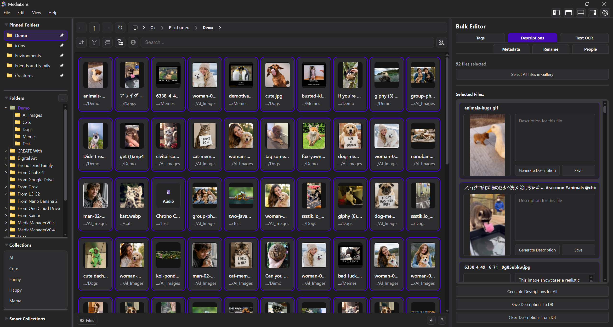
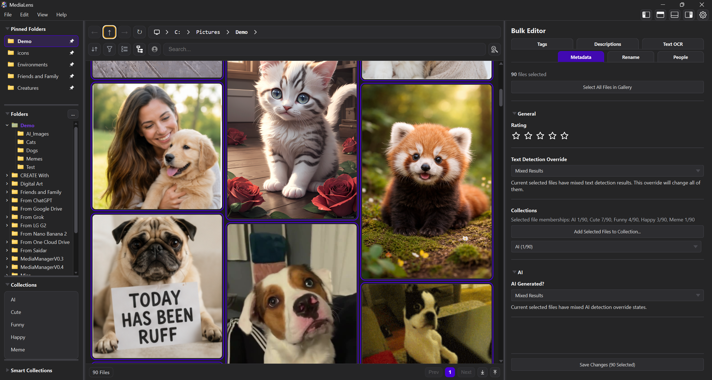
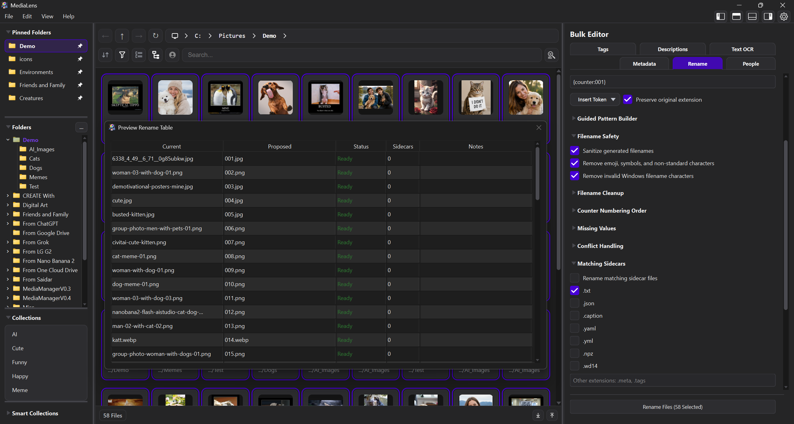
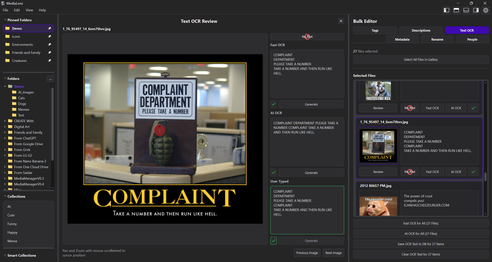
Search, OCR, and AI metadata
MediaLens can search people, objects, text, tags, descriptions, ratings, dates, collections, prompts, generation details, and metadata. AI models install only when needed and can run locally on CPU or GPU.
Product tour
v1.4.6 is much broader than the original website showed. Switch through current screenshots for editor, People, cleanup, OCR, search, bulk editing, and history workflows.
Designed for
Get MediaLens
Install MediaLens, choose a folder, and start turning a large visual library into something searchable, editable, and safe to clean up.